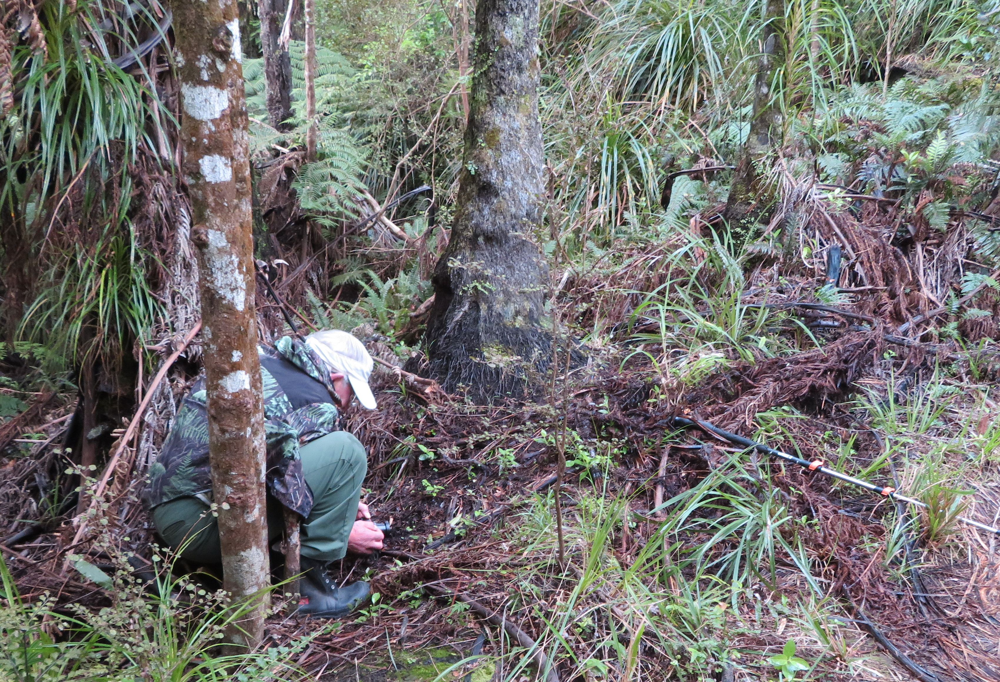

|
New Zealand Native Orchid Group
|
||||
|  |
The society is a loose group of enthusiasts from around New Zealand with some members resident overseas. We meet formally once a year for field days and discussions but organise local "expeditions" to particular areas from time to time. This site provides descriptions & photos of most of the recognised species, along with guides on where to find them, their flowering times and habitats. |
||||
|
The society has produced many publications including a quarterly journal JOIN the society and meet local people with a common interest to share local trips to places they know well. |